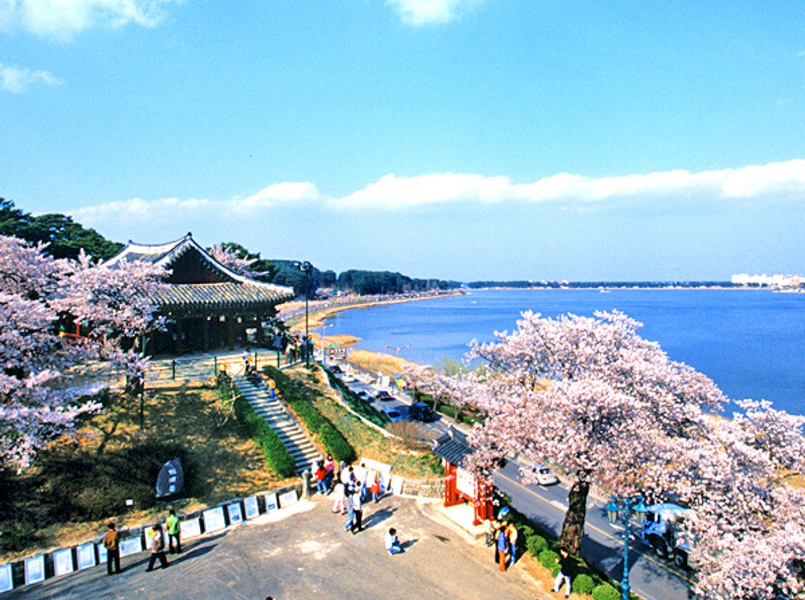
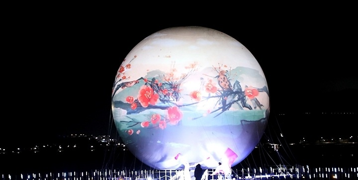

걷는 순간이 여행이 되는 봄, 강릉 경포 벚꽃축제

경포호를 중심으로 펼쳐지는 벚꽃길은 강릉 봄 여행의 대표 코스입니다.
호수를 따라 길게 이어진 산책로에는 매년 봄이 되면 수많은 벚꽃이 만개하여, 분홍빛 터널처럼 장관을 이룹니다.
맑은 호수 물결 위로 비치는 벚꽃 그림자는 또 다른 아름다움을 만들어내며, 낮과 밤이 각각 다른 분위기를 선사합니다.
특히 바람이 불 때마다 꽃잎이 흩날리는 모습은 마치 꽃비가 내리는 듯한 장면을 연출해 방문객들에게 깊은 인상을 남깁니다.
가벼운 산책부터 사진 촬영, 자전거 코스까지 다양한 방식으로 즐길 수 있어 남녀노소 모두에게 사랑받는 봄철 명소입니다.

경포호 야간 조명은 해가 지고 난 뒤 더욱 빛을 발하는 강릉의 대표적인 밤 풍경입니다.
어둠이 내려앉으면 호수 주변으로 설치된 조명이 하나둘 켜지며, 경포호 일대를 아름다운 빛으로 물들입니다.
잔잔한 호수 위로 비치는 조명의 반영은 고요한 분위기에 화려함을 더해주며, 낮과는 전혀 다른 신비로운 풍경을 만들어냅니다.
조명을 따라 천천히 산책을 즐기다 보면 일상의 분주함에서 벗어나 여유로운 밤의 감성을 느낄 수 있습니다.
가족, 연인과 함께하기 좋은 장소이자 사진 촬영 명소로도 사랑받는 특별한 공간입니다.
2026년 강릉 벚꽃 축제는 경포대 등 주요 명소를 통합하여 4월 초순에
절정을 이루며, 도심 전역이 벚꽃 명소로 변신합니다.
특히 경포호수 5.73km 조명길, 야간 라이트닝 터널, 버스킹 등이
펼쳐지며, 3~4월 말 만개 시기에 맞춰 관광객들에게 봄의 낭만을
선사합니다.